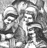
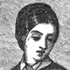
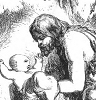
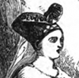
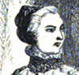

Alison Booth
Oliphant, Margaret, et al. Women Novelists of Queen Victoria's Reign: A Book of Appreciations. London: Hurst & Blackett, 1897. Folcroft, PA: Folcroft Library, 1969; 1974. Norwood, PA: Norwood, 1977.
TOC: Mrs. Oliphant: The Sisters Brontë. Mrs. L. Linton: George Eliot. E. Lyall: Mrs. Gaskell. A. Sergeant: Mrs. Crowe; Mrs. Archer Clive; Mrs. Henry Wood. C.M. Yonge: Lady Georgiana Fullerton; Mrs. Stretton; Anne Manning. Mrs. Parr: Dinah Mulock (Mrs. Craik). Mrs. Macquoid: Julia Kavanagh; Amelia Blandford Edwards. Mrs. Alexander: Mrs. Norton. Mrs. Marshall: “A.L.O.E.” (Miss Tucker); Mrs. Ewing.
Search OCLC WorldCat for this title.
Search Google Books for this title.
O'Mahoney, Katherine A. O'Keefe. Famous Irishwomen. Lawrence, MA: Lawrence Publishing, 1907.
TOC: Introductory; Women of Pagan Ireland; Women of Christian Ireland; Virtue and Erin - Saxon and Guilt; The Flower of Leinster Dames; Famous for Martial Bravery; Famous in Exceptional Lines; Irish Wives and Mothers; A Few of Ireland's Martyrs; Martyrs to Love and Patriotism; Foundresses of Religious Orders; Foundresses American Branches of Religious Orders; Foundress of Trinity College; Famous Philanthropist; Famous on the Stage; Famous Irish Beauties; Irishwomen Famous in Literature; Literary Irishwomen Who Died in Other Lands; Present Day Literary Women in Ireland; Literary American Women of Irish Blood.
The book contains illustrations of Scota, the Wife of Milesius; St. Bridget, Patroness of Ireland; an "Irish Lady"; "Michigan Bridget"; Nano Nagle; "New Orleans Margaret"; Katherine E. Conway.
Search OCLC WorldCat for this title.
Search Google Books for this title.
O'Malley, Ida Beatrice. Great Englishwomen. London: Bell, 1933.
Author of biography of Florence Nightingale, 1931. Possibly the same as a collection of the same title by M.B. Synge (London: Bell, 1911). Synge is identified as author of "Great Englishmen." The Baldwin Project: Bringing Yesterday's Classics to Today's Children: Table of Contents: Queen Bertha; Maude the Good; Eleanor of Aquitaine; Philippa of Hainault; Margaret of Anjou; The Lady Margaret; Margaret Roper; Lady Jane Grey; Princess Elizabeth; Lady Rachel Russell; Angelica Kaufmann; Hannah More; Elizabeth Fry; Mary Somerville; Elizabeth Barrett Browning; Florence Nightingale.
Search OCLC WorldCat for this title.
Search Google Books for this title.
O'Malley, I[da] B[eatrice]. Women in Subjection: A Study of the Lives of Englishwomen Before 1832. London: Duckworth, 1933. Tokyo: Athena Press, 2006.
NOT:=history.
Search OCLC WorldCat for this title.
Search Google Books for this title.
Omori, Annie Shepley, translator. Diaries of Court Ladies of Old Japan. With an Introduction by Amy Lowell, and with Illustrations. Boston and New York: Houghton Mifflin, 1920. London: Constable, 1921. Tokyo: Kenkyusha, 1935.
TOC: The Sarashina Diary; The diary of Murasaki Shikibu; The diary of Izumi Shikubu.
NOT:=auto/biography.
Search OCLC WorldCat for this title.
Search Google Books for this title.
“One Who Knows Them.” Girls and Their Ways. Illustrated. London: Hogg, 1881.
British Library.
TOC: The Girl at Home; The Girl in her Leisure Hours; The Girl at School, The Girl and her Friends; The Girl Abroad, Character Sketches; A Girl’s Garden in Prose and Poetry; The Girl’s Amatuer Gardener’s Calendar; or, All the Year Round in the Girl’s Garden; The Girl’s Library – What to Read; The Girl in the Country, Pastime for Leisure Hours Throughout the Years; What the Girl Might and Should Be: Examples of Noble Girlhood from the Lives of Noble Women.
Search OCLC WorldCat for this title.
Search Google Books for this title.
O'Reilly, Bernard. Heroic Women of the Bible and the Church: Narrative Biographies of Grand Female Characters of the Old and New Testaments, and of Saintly Women of the Christian Church, Both in Earlier and Later Ages. Illustrated. New York: Ford, 1877. Title Variant: Illustrious Women of Bible and Catholic Church History: Narrative Biographies of Grand Female Characters of the Old and New Testaments, and of Saintly Women of the Holy Catholic Church, Both in Earlier and Later Ages. New York: Kennedy, 1877; Dewing, 1889; 1893. Chicago: Hyland, 1889. New York: Kennedy, 1894; 1896; 1899; 1903; 1905.
Search OCLC WorldCat for this title.
Search Google Books for this title.
Overton, Grant M. Women Who Make Our Novels. New York: Dodd, Mead, 1918; 1925; 1927; 1928; Revised Edition. 1931; Moffat, Yard, 1919; 1920; 1922.
TOC: Edith Wharton; Alice Brown; Ellen Glasgow; Gertrude Atherton; Mary Roberts Rinehart; Kathleen Norris; Margaret Deland; Gene Stratton-Porter; Eleanor H. Porter; Kate Douglas Wiggin; Mary Johnston; Corra Harris; Mary Austin; Mary S. Watts; Mary E. Wilkins Freeman; Anna Katharine Green; Helen R. Martin; Sophie Kerr; Marjorie Benton Cooke; Grace S. Richmond; Willa Sibert Cather; Clara Louise Burnham; Demetra Vaka; Edna Ferber; Dorothy Canfield Fisher; Amelia E. Barr; Alice Hegan Rice; Alice Duer Miller; Eleanor Hallowell Abbott; Harriet T. Comstock; Honoré Willsie; Frances Hodgson Burnett.
Search OCLC WorldCat for this title.
Search Google Books for this title.
Owen, Mrs. Octavius Freire [Emily]. The Heroines of Domestic Life. London and New York: Routledge, Warne, & Routledge, 1861; [1877].
TOC: Ruth; Antigone; Panthea; Eponina; Gertrude von der Wart; Margaret Roper; Anne Askew; Jeanne D'Albret; Pocahontas; Lucy Hutchinson; Lady Rachel Russell; Grizel Cochrane; Winifred, Countess of Nithsdale; Helen Walker; Flora MacDonald; Louise Schepler; Emilie de Lavalette; Elizabeth Fry; Prasca Loupouloff; Sarah Martin; Grace Darling; Florence Nightingale.
British Library. Riches. Oldfield.
-
 Ruth and Naomi
Ruth and Naomi -
 Margaret Roper taking farewell of her Father
Margaret Roper taking farewell of her Father -
 Jeanne d'Albret refusing to walk to the altar
Jeanne d'Albret refusing to walk to the altar -
Lucy Hutchinson binding up the wounds of a Royalist
-
 Flora MacDonald taking care of the Pretender
Flora MacDonald taking care of the Pretender -
Frasca Loupouloff on the steps of the Senate House
-
Florence Nightingale
Search OCLC WorldCat for this title.
Search Google Books for this title.
Owen, Mrs. Octavius Freire [Emily]. The Heroines of History. New York: Carlton & Phillips; Cincinnati, OH: Hitchcock & Walden, 1854; 1856. London and New York: Routledge, 1854; 1858; [1877].
TOC: Jewish Era: Jael, or Jahel; Judith; Salamona; Mariamne. Classic Era: Semiramis; Penelope; Aspasia; Cornelia; Portia; Cleopatra; Arria; Boadicea; Zenobia. Modern Era: Jane de Montfort; Philippa of Hainault; Joan d'Arc; Margaret of Anjou; Isabella of Castile; Catherine de Medici; The Lady Jane Grey; Mary, Queen of Scots; Madame de Maintenon; Marie Antoinette. .
British Library. See 391.
-
Boadicea
-
 Judith
Judith -
Semiramis
-
 Jane de Montfort
Jane de Montfort -
 Joan of Arc
Joan of Arc -
Margaret of Anjou
-
 Isabella of Castille
Isabella of Castille -
Catherine de Medici
Search OCLC WorldCat for this title.
Search Google Books for this title.